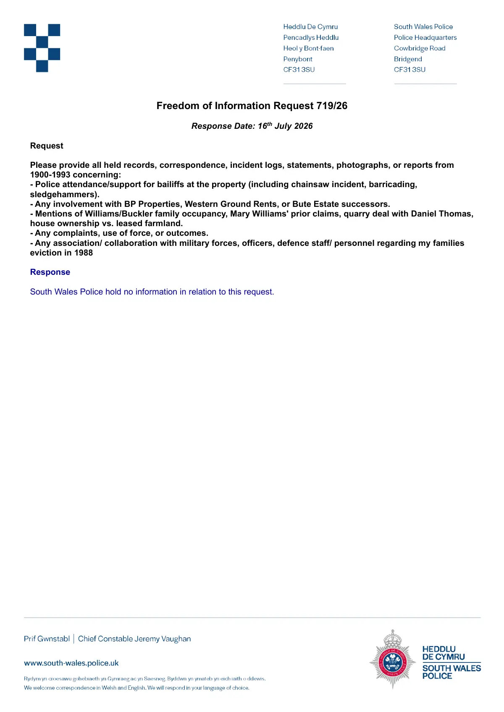

GHF-E106-R102-A1 not held
Response 719_26.pdf

Transcript
Freedom of Information Request 719/26 Response Date: 16th July 2026 Request Please provide all held records, correspondence, incident logs, statements, photographs, or reports from 1900-1993 concerning: - Police attendance/support for bailiffs at the property (including chainsaw incident, barricading, sledgehammers). - Any involvement with BP Properties, Western Ground Rents, or Bute Estate successors. - Mentions of Williams/Requester family occupancy, Mary Williams' prior asserts, quarry deal with Daniel Thomas, house ownership vs. leased farmland. - Any complaints, use of force, or outcomes. - Any association/ collaboration with military forces, officers, defence staff/ personnel regarding my families eviction in 1988 Response South Wales Police hold no information in relation to this request.
Artifact description
States South Wales Police holds no information relating to the request about bailiff attendance, eviction, and related matters.
| Catalogue ID | GHF-E106-R102-A1 |
|---|---|
| What it is | PDF document from South Wales Police. Attached to an email received on 16 July 2026, their reference 719/26. 1 page. |
| From | South Wales Police |
| Email received | 16 July 2026 |
| Their reference | 719/26 |
| Pages | 1 |
| File | Response 719_26.pdf (177 KB) |
| State | Read |
Our integration
Part of the FOI thread with South Wales Police opened 10 October 2026. The thread's standing classification is “not held”. Statutory time: met.
Concern to test: whether this reply answers the question as asked, or a narrower one. Not checked against the original request wording here.
Related: GHF-E106-R103-A1 — Complaints Procedure.pdf · The covering email · What They Don’t Say: WTDS-ab97dc7e-1 · EV-0440 in the evidence catalogue · Timeline · Disclosure Dartboard